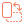
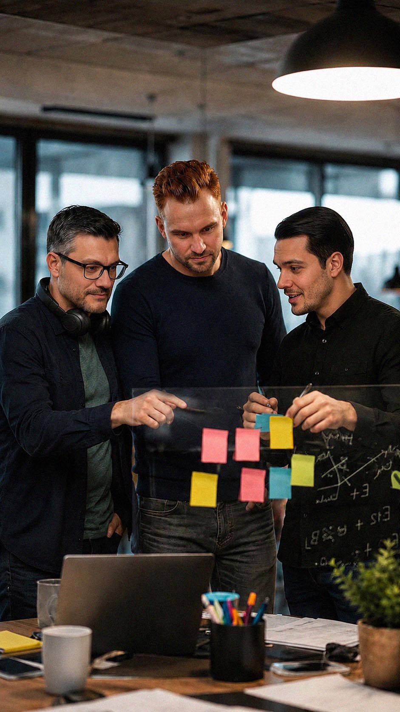
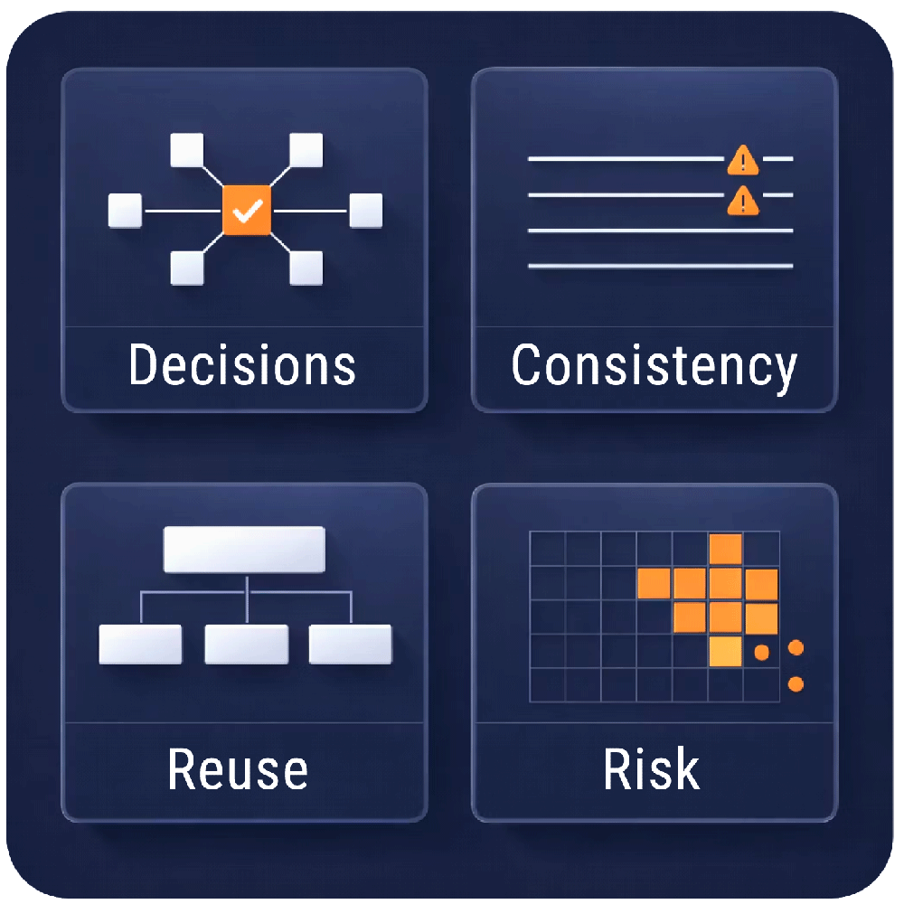
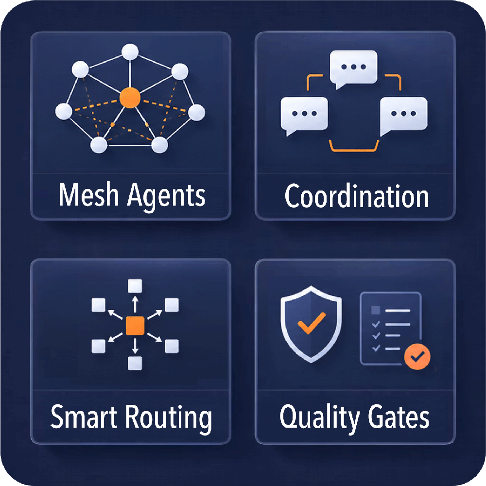
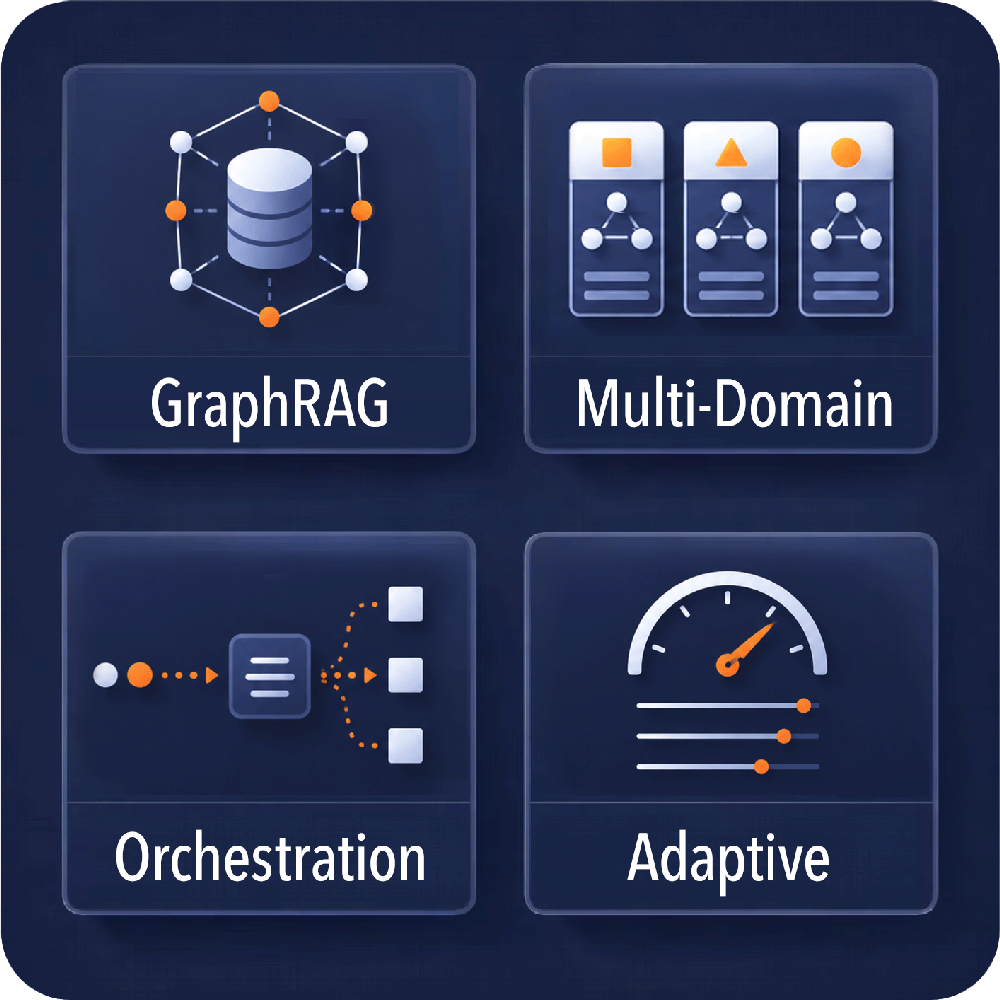

Rotate for the
best experience
best experience
Membria is optimised for landscape view



| Metric | Value |
|---|---|
| Founded | February 2023 · California, USA |
| Core Product | Membria.AI — memory & experience layer for AI agents |
| Production Verticals | SDLC · Fintech/Banking · AI Accounting/Audit · Engineering/EPC |
| Deployment | Cloud SaaS · self-hosted · on-premise enterprise |
| Clients & Partners | OES · Wowcube · Hiscox · K-Telco · Kazakhstan Government · industrial enterprises across EMEA/CIS |
| Technology Partners | NVIDIA · Amazon Web Services |
| Team Background | 20+ years enterprise software & audit · 9 years applied AI — finance, government, industrial, deep-tech |



| Product | Who buys | Delivery | Status |
|---|---|---|---|
| Membria CE | solo developers on Claude Code / Codex / Cursor | cloud SaaS · zero-install MCP | SaaS · code.membria.ai |
| Membria Enterprise | engineering & product teams | self-hosted platform · own UI | Demo · design partners |
| AI-EPC | EPC contractors & design institutes | vertical app on the same core | Live demo · epc.membria.ai |
| Glass | accounting & audit teams | vertical app on the same core | Design-partner stage |
One AI substrate · any vertical domain
The full stack — from memory and reasoning to deployment and governance
| Vertical | PK — best practices | NK — anti-patterns / prohibitions | Source | Status |
|---|---|---|---|---|
| Engineering (EPC) | ~1.3M | ~1.2M | 20,000+ standards — ISO · IEC · ASTM · ГОСТ · API · ASME · NFPA · DNV | Live · Scaling · epc.membria.ai |
| Code | ~250K Skills | ~320K AntiPatterns | 96.5K mined repos + curated sources, CWE-mapped | Live · Scaling · code.membria.ai |
| Audit / Glass | schema live | schema live | materiality & provenance graph — seeding from client engagements | Design-partner stage |
| Player | What they do | Persistent memory? | Gap |
|---|---|---|---|
| Autodesk | design + construction cloud | No | AI = copilot for CAD, not knowledge management |
| Bentley Systems | infrastructure digital twins | No | twin ≠ memory — no decision provenance |
| AVEVA / Schneider | process industry digital twins | No | operational data, not engineering decisions |
| Procore | Helix AI automation | No | stateless — every request starts from zero |
| SymphonyAI | P&ID drawing recognition | No | recognition, not a memory plane |
| Memory startups mem0 · Zep · Letta | generic agent memory | Yes | no vertical depth, no verification, no standards graph |


| Ask | Detail |
|---|---|
| Traction | 1 bank + 1 government live enterprise · multiple EPC engineering pilots · 100+ seats deployed · CE & EPC SaaS launching in parallel |
| Raising | $2M seed on a $15M pre-money valuation |
| Use of funds | EPC go-to-market & certifications · commons scale-out to 1–2M nodes · enterprise connectors · core team |
| Contact | hi@actiq.ai · membria.ai · code.membria.ai · epc.membria.ai · glass.membria.ai (soon) |